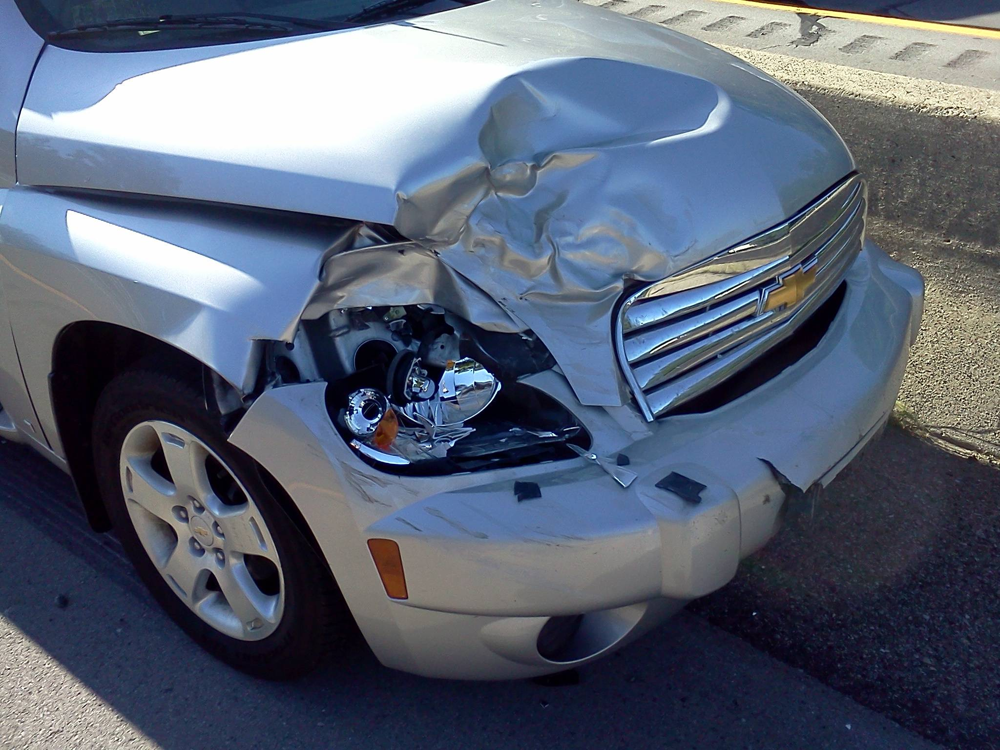

An insurance-grade vehicle damage estimator. Upload one photo of a car and Claimly identifies the visible parts, spots the damage, and works out a priced, claim-ready repair estimate for that make and model.

Front bumper Dent, lamp broken Replace · R8,320Motor claims usually start with a photo and end with a human deciding what the repair should cost. Claimly compresses that first mile. A client or assessor submits a single image; two computer-vision models run on it locally: one segments every visible panel, the other finds the damage, and the two are matched so each dent, scratch or shattered light is attributed to the part it actually landed on.
From there it is priced. Costs resolve per make and model in South African Rand from a catalogue the business controls, the assessor confirms repair or replace on each part with the total updating live, and the finished quote exports as a branded PDF. Detection is genuine and reviewable, never a stock diagram, with a person always in the loop.
Parts and damage are outlined on the image itself. Hover any part to see the model's confidence and what it found.
Both models' masks are rasterised onto the image and overlap-measured, so a panel covered by damage is flagged and typed.
A managed catalogue resolves replacement and repair costs per vehicle in Rand. Switch the car and the estimate reprices on the spot.
Human-in-the-loop review. The assessor makes the call on each part and marks anything the model missed; the total follows.
One click produces a clean quote with the photo embedded and a damaged-parts table, ready for the claim file.
Inference is CPU-only and local. Photos are analysed on the box; nothing is sent away.
The client or assessor uploads a single photo of the vehicle. Add the make and model if known, so the estimate uses the right vehicle and pricing.
One model identifies the visible panels. Another detects damage. The two are matched to show exactly which parts were affected.
Choose repair or replace for each affected part, watch the estimate update as you go, then export a clean PDF ready for the claim.